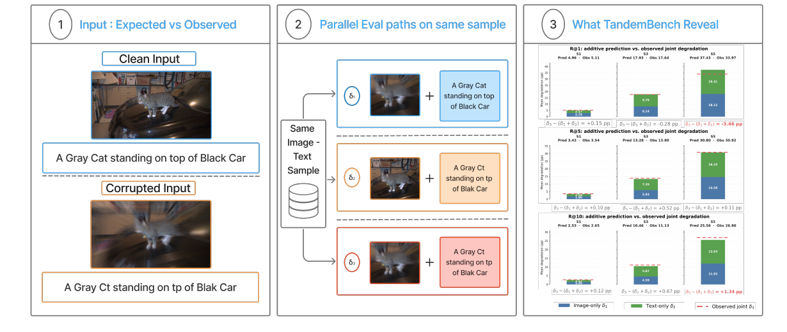
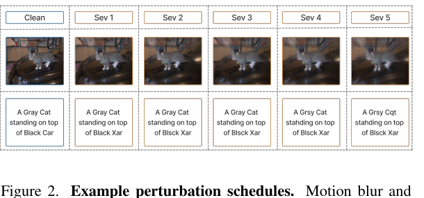
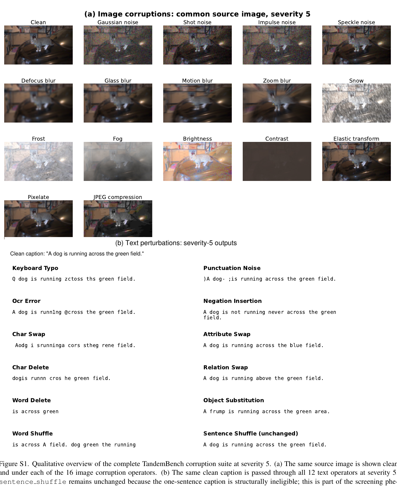
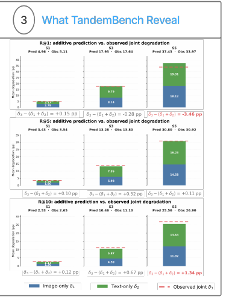

The same image–text sample is evaluated along image-only, text-only, and joint-corruption paths. The benchmark then asks both how much single-modality evaluation misses and whether the two marginal losses reconstruct the joint effect.
Abstract
Vision-language retrieval systems may encounter degradation in both images and text simultaneously, yet robustness is commonly evaluated one modality at a time. This leaves a basic question unresolved: can joint degradation be inferred from the corresponding image-only and text-only effects?
We introduce TandemBench, a benchmark for matched marginal and joint corruption that evaluates 19 dual-encoder retrieval models across 16 image perturbations, 12 text perturbations, five ordinal severity levels, two datasets, and both retrieval directions. We separate perturbation applicability, execution, and marginal difficulty, and use an eight-operator execution-screened subset containing 47,360 complete conditions for primary analysis.
Joint degradation exceeds the larger single-modality loss in 95.15% of these conditions, by 5.07 Recall@1 points on average; the same qualitative result holds across the full twelve-operator suite. More importantly, the sum of the two marginal losses reconstructs joint degradation closely under mild corruption, but its predictive accuracy declines as degradation strengthens and its error becomes dependent on retrieval cutoff and model. Realized-damage matching shows that these conclusions are not an artifact of pairing operators by a common severity index. Recovery experiments further reveal strong dependence on retrieval direction, corruption, and model.
Benchmark protocol
Every corruption condition is evaluated along three matched paths. Path 1 corrupts the image only, Path 2 corrupts the caption only, and Path 3 corrupts both modalities on the same sample. All three effects are measured as drops from the same clean baseline.
Image and text corruptions are paired using a common ordinal severity index from 1 to 5. The index orders intervention strength within an operator; it does not imply equal physical, linguistic, or realized retrieval damage across different operators.

Corruption suite
Sixteen visual corruptions and twelve text perturbations provide controlled interventions across both sides of retrieval.


What TandemBench reveals
Marginals are informative, but not universally additive
At Recall@1 severity 1, the marginal losses sum to 4.96 points versus 5.11 observed, with bias +0.15 and condition-level R² = 0.968. As corruption strengthens, condition-level predictability declines across retrieval cutoffs.
The direction of the additive error is metric-dependent at severity 5: Recall@1 is −3.46 points below the additive estimate, Recall@5 is nearly additive at +0.11, and Recall@10 is +1.34 above the sum. The high-severity Recall@1 pattern is therefore not a universal property of joint corruption.
Recovery under joint corruption
Recovery is treated as a downstream stress test rather than an adaptation leaderboard. Coverage differs by method, so effects should be read within each method against its own no-adaptation control.
| Method | Type | I2T ΔR@1 | T2I ΔR@1 | Coverage |
|---|---|---|---|---|
| Tandem-Aug | Study procedure | +0.83 | +1.65 | 7/7 |
| Tandem-Align | Study procedure | −13.28 | −12.70 | 5/7 |
| QueryExpansion | Prior method | +3.40 | −8.72 | 7/7 |
| TCR | Prior method | +4.73 | −0.03 | 10 checkpoints |
MS-COCO Recall@1 change under joint corruption. The stress test exposes strong dependence on retrieval direction, corruption, and model family.
Reproducible release
The release is organized as a four-stage pipeline. The complete evaluation records are included, so reproducing paper tables does not require rerunning the neural models.
Generate image corruptions and perturbed captions.
Compute Recall@1/5/10 across models and matched conditions.
Run adaptation and input-restoration stress tests.
Regenerate reported tables and audit claims from released records.